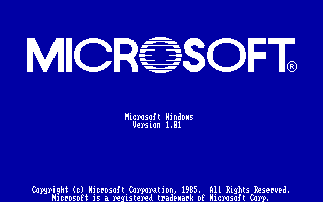
The Microsoft Windows 1.01 boot up screen. If you look at it sideways,
that "O" in the center kind of looks like jaws with teeth.
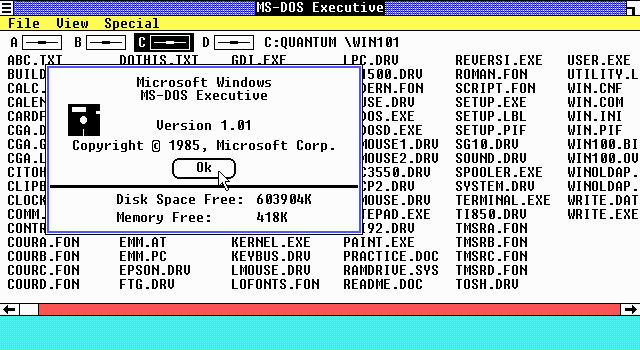
When Windows 1.x starts, it launches the MS-DOS Executive. The MS-DOS
executive is kind of like File Manager or Explorer, except there are no
icons and no drag-and-drop. Programs and directories can be opened by double-clicking,
but other disk functions must be done through the menu.
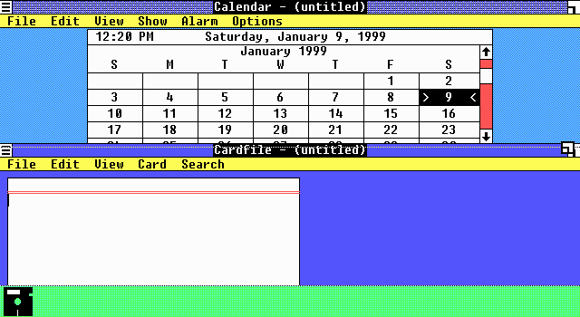
In Windows 1.x you are stuck with tiled windows. The control in the
upper right corner of each window is a "resize" control. Dragging it around
will move the top edge of the window and double-clicking will "zoom" the
window to full screen. Some programs have a "resize" control in the lower
right corner of the window as well.
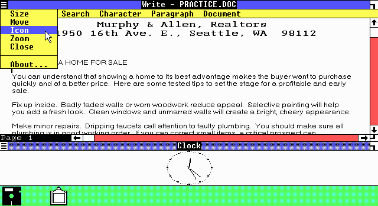
The control in the upper left of the window is the system box. Clicking
once on this box brings up a menu of available window options for the current
window. In this version of Windows, it also contains the applications "About"
information.
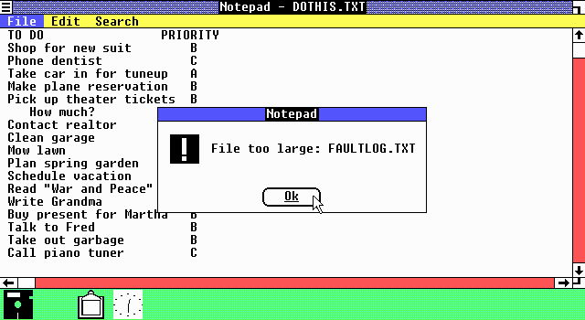
This screen shot shows the Windows 1.01 version of Notepad. It has
a very small fixed sized text buffer, 16k or so, and therefore can only
open small text files.
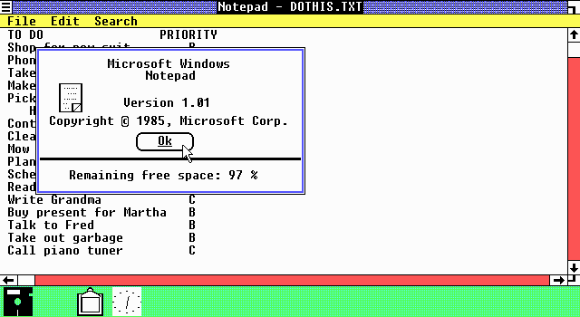
This version of Notepad even shows how much space is free in its text
buffer.
Note the icons at the bottom of the screen. This is a special program icon area that is reserved for minimized programs. Double clicking one will display the program's window. Program icons can not be moved from this special icon area, nor can windows cover this area unless one is running in "zoomed" mode.
In Windows 2.x and 3.x, minimized icons can roam around anywhere on
the screen, and can easily be covered by a program window. This made the
task bar in Windows 95 look like a revolutionary breakthrough in the way
windows are managed. Compared to the icon area of Windows 1.x, the task
bar looks only like a modification.
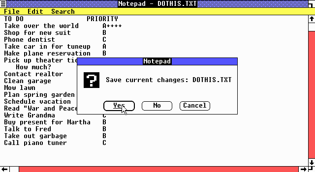
This screen shot shows Notepad in a "zoomed" state, taking up the full
screen.
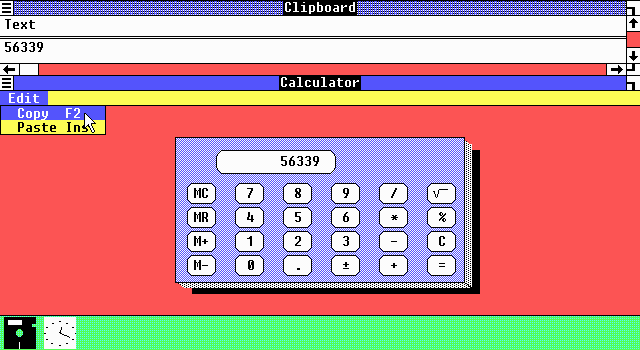
Here, The Windows 1.x calculator and the Windows clipboard demonstrates
the ability of Windows to share data between applications.
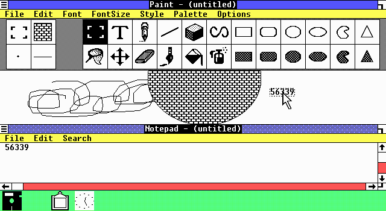
Now the data is being pasted in to Microsoft Paint.
This version of Paint is only capable of monochrome graphics and saves files in an .MSP format.
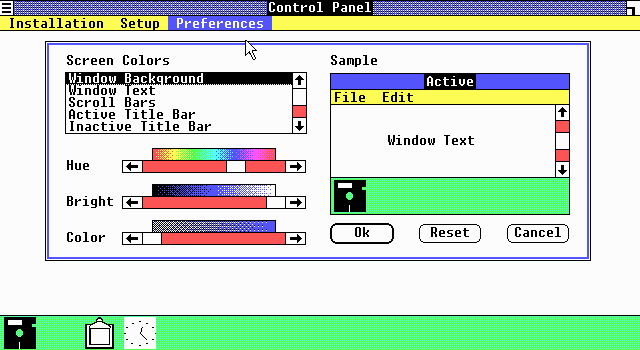
This is the the screen color section of the Windows control panel.
The gradient selection bars suggests possible support for true color graphics.
Note that there is no way to easily select solid colors from any existing
pallet.
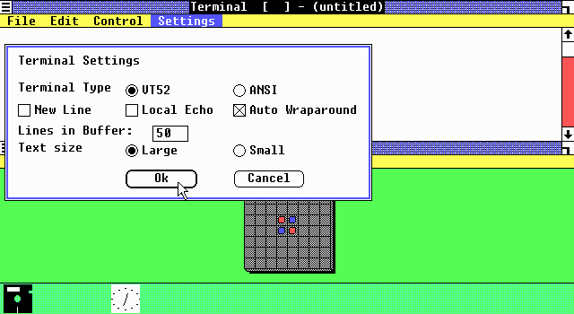
A typical Windows dialog box showing option buttons, check boxes, a
text box and command buttons. These controls are provided by Windows, so
the program does not need to worry about drawing or controlling them.
Also shown is the only game that shipped with Windows 1.x, reversi.
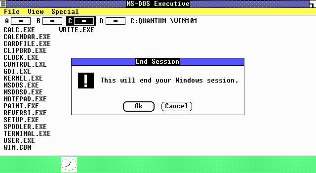
The best part of Windows 1.x.